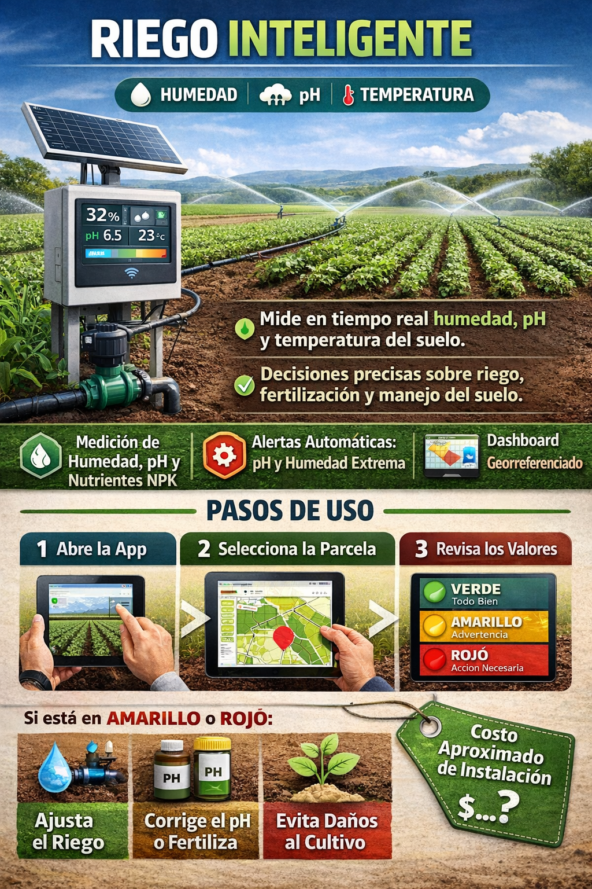

Para qué sirve:
Mide en tiempo real humedad y temperatura del suelo.
Permite tomar decisiones precisas sobre riego, optimizando el consumo de agua y mejorando la salud de los cultivos.
Mejoras recomendadas para Alicona Campo Verde:
Integrar sensores de nutrientes (NPK) para ajustar fertilización junto con el riego.
Implementar alertas automáticas para cambios bruscos de humedad extrema.
Conectar datos con un dashboard visual georreferenciado para identificar áreas críticas y programar riegos automáticos.
Costo aproximado de instalación:
Variable según tamaño de la parcela y cantidad de aspersores automatizados.
Pasos de uso:
Abrir la app o dashboard en la tablet o celular.
Seleccionar la parcela que quieres revisar.
Observar los valores:
Verde = todo bien
Amarillo = advertencia, hay que revisar
Rojo = acción necesaria
Si los valores están en amarillo o rojo:
Ajustar manualmente o activar riego programado desde la app.
